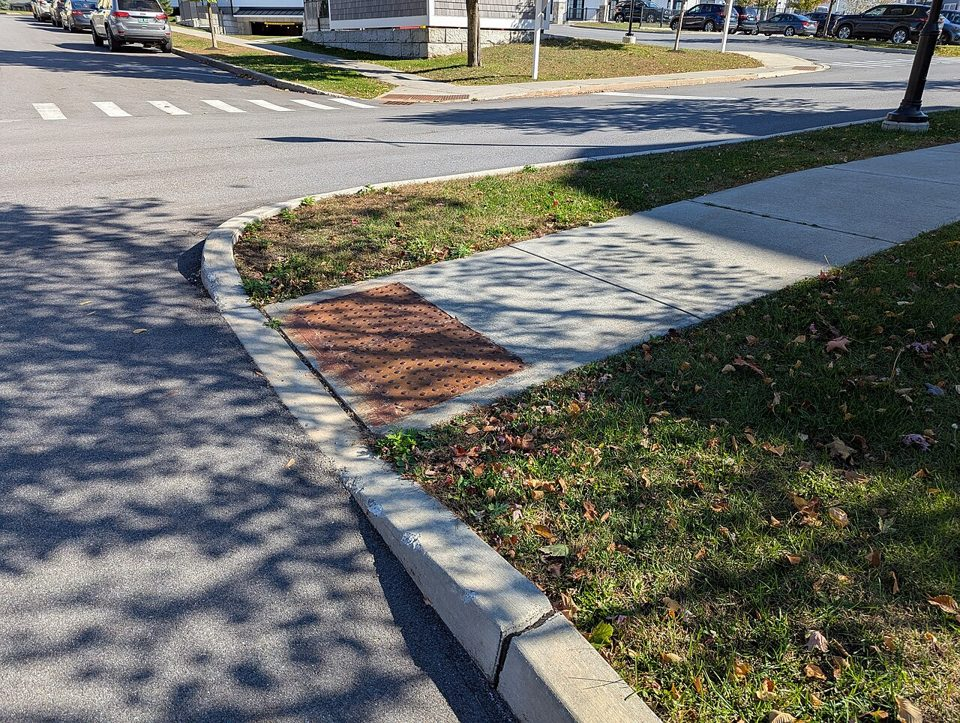
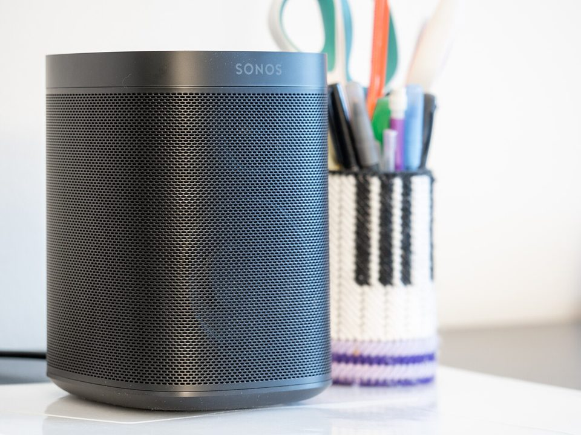

Chapter 11 · Software, UX, and Selection
Software: The Pizza You Could Not Order
Guillermo Robles is blind and uses software that reads a screen aloud. At least twice he tried to order a pizza from Domino's, on the website and in the app, and could not, because neither had been built to work with a screen reader. He sued, and the case reached the door of the Supreme Court. This chapter is about the two software decisions every business makes: how it is designed and how it is chosen. It is also about why the interface is the part of the system that decides who gets to be a customer.
Wanna go analog?or save it as a PDF; the navigation drops out
Every business runs on software it did not write, bought from people it will never meet, and judged by customers who only ever see the front of it. This chapter is about where that software comes from, how to tell whether it works for the people using it, and how to choose it well.
By the end of this chapter you should be able to:
- Distinguish system from application software, and explain where business software comes from, including open source and its licenses.
- Explain what AI coding tools change about building software, and what they do not.
- Explain how software connects to other systems through APIs, and why every update is a decision.
- Explain user experience, usability, and accessibility, and use them to judge a real interface.
- Apply a software selection process, total cost of ownership, and the build, buy, or subscribe decision.
- Explain why the ADA reached the web in Robles v. Domino's, and what the ruling now binds.
1Where software comes from, and how it changes
Count the software you used before breakfast. An alarm on your phone, the weather, a banking app, a message to a friend, maybe a podcast. You chose almost none of it in any real sense. You paid for very little of it directly, and nobody you know wrote any of it. A business is in the same position, with higher stakes. Most of the software it runs on was written by other people, and the business still answers for what that software does.
Every chapter so far has treated software as one of the five components, the one that holds the rules. This chapter asks where those rules come from, who can change them, and who they work for. Section 1 is about where software comes from and how it changes. Section 2 is about how to judge it and how to choose it. The main case is what happened when one company's software did not work for one customer, and a court decided that was the company's problem.
1.1 System software and application software
System software runs the machine itself. The operating system on your laptop or phone is the obvious example, along with the programs that manage storage, networks, and security in the background. Application software does the business's actual work: a cash register, a payroll system, a pizza-ordering app.
The split matters to a manager for one reason. Application software sits on top of system software, so a change underneath can break everything above it without anyone touching the application. Chapter 5 showed the extreme version. In July 2024 a faulty update to CrowdStrike's security software, which runs deep inside Windows, crashed millions of computers at once. Airlines, hospitals, and banks stopped working, and none of their own applications had changed.
1.2 Custom, packaged, or rented
A business can get application software in three ways. Each one moves work, and control, between the business and somebody else.
Custom software is built for you, by your own developers or by a firm you hire. It fits exactly, and you pay for every hour of building it and every year of keeping it running. Domino's ordering system, which Chapter 4 called the business itself, is custom.
Packaged software, also called off-the-shelf software, is bought and installed on your own computers. It is cheaper and fits approximately, which is why Chapter 8 spent a whole case on configuring it versus customizing it. An accounting program a firm installs on its own servers is packaged software.
Software as a service (SaaS) is rented. It runs on the vendor's computers, you reach it through a browser or an app, and you pay a subscription. Gmail and Canvas are SaaS, and most new business software is now sold this way.
Hold one fact for the main case. Domino's built its own ordering system, so whatever that software did to customers, the company had designed it.
1.3 Open source, and the license that comes with it
Open source software is software whose source code, the instructions programmers write, is published for anyone to read, use, and change. Proprietary software keeps its code private, and you get only the right to run it. Linux, which runs a large share of the internet's servers, is open source, and so is much of Android.
Open source is everywhere, including inside the software you pay for. When the firm Black Duck audited 947 commercial codebases for its 2026 report, 98 percent contained open source components. The average application contained about 1,180 of them.1 If you buy software today, you are almost certainly buying open source inside it.
Open source is free to download. It is not free to own. Every open source project comes with a license, the legal terms that say what you may do with the code. Some licenses let you do nearly anything. Others require you to publish your own changes if you distribute the result. The same audit found license conflicts in 68 percent of the codebases it examined.1
The larger cost is keeping the parts current. Somebody inside the company has to know which open source components it runs and update them when a flaw is found. Chapter 10's Equifax breach began with exactly that failure: a publicly announced flaw in Apache Struts, an open source framework, left unpatched on a system that faced the internet. The code was free. Not tracking it cost a great deal.
1.4 How software gets built, and what AI changes
Chapter 5 walked through how software gets built: requirements, design, building, testing, and launch, whether in one long sequence or in short cycles. That process has not changed. Two things have changed who does the building.
The first is low-code tools, which let people who are not programmers build simple applications by arranging ready-made pieces on a screen. A sales manager can build a form that feeds a spreadsheet without filing a request with IT.
The second is much bigger. AI coding assistants write code from a plain-language description of what you want. By 2026 many professional programmers would not work without one. So does AI make software cheaper to build? The evidence says yes, sometimes, and by less than it feels.
In a 2023 experiment by researchers at Microsoft, GitHub, and MIT, programmers using GitHub's AI assistant finished a set task, writing a small web server, 55.8 percent faster than programmers without it.2 GitHub sells that assistant, which is worth knowing when you read the number. In 2025 the research group METR ran a harder test. Experienced developers worked on real tasks in large projects they already knew well. With AI allowed, they took 19 percent longer. Afterward, they estimated that AI had made them about 20 percent faster.2
By early 2026 METR said developers were probably faster than in its first study, but it could not measure by how much. Too many of them refused to do half their work without AI, even when they were paid to take part.2 The tools had become part of how the work was done before anyone could measure what they were worth. Chapter 6 would call that a measurement problem, and it is one.
Here is the plain answer, and its conditions. AI makes writing code cheaper, sometimes much cheaper, especially for small, new, well-defined tasks. It does not make owning code cheaper. Code is written once and then maintained for years. It gets fixed, updated, connected to new systems, and checked for security flaws. The work you skip now and owe later has a name, technical debt, and AI makes it easier to borrow. When somebody tells you a system can be built in a weekend, ask who will maintain it in its third year.
1.5 How software connects: APIs
Business software almost never works alone. A sale at a register has to lower the inventory count, charge a card, add points to a loyalty account, and land in the accounting system. Those are often four systems from four vendors, and they talk to each other through APIs.
An application programming interface (API) is a published set of requests one program can make of another, along with the answers it will give back. A weather app owns no weather stations. It sends a request to a weather service's API and shows you the answer. Domino's AnyWare, from Chapter 4, was the same idea in the other direction: one ordering system that accepted orders from many channels.
Two consequences follow for a manager. First, a system's real cost includes connecting it to everything else, which is why integration appears in the cost section below. Second, an API is a promise that another company can change. When a vendor retires an old API or starts charging for it, every system built on it has to change too, on the vendor's schedule rather than yours.
1.6 Every update is a decision
Software is never finished. Vendors release updates constantly. Some fix security flaws, some add features, and some quietly remove them. With SaaS, the vendor decides when an update arrives. With custom software, your own team decides, and owns the result.
Treat every update as a decision with a cost on both sides. Skip a security update and you are Equifax. Ship a large update all at once, without testing it on the tasks real people do, and you are Sonos, which section 3 is about. The manager's question is not whether to update. It is who checks each update against the work people actually do, and who is allowed to say it is not ready.
2Judging software, and choosing it
Section 1 was about where software comes from. This section is about the two judgments a business makes about it: whether it works for the people who use it, and whether it is the right thing to buy. The first is the job of user experience design. The second is the job of software selection, which most managers do many times in a career and are rarely taught.
2.1 User experience: watching people use the thing
User experience (UX) is everything a person experiences while using a product: finding it, learning it, getting a task done, recovering from a mistake, and leaving. The user interface (UI) is narrower. It is the screens, buttons, and messages a person actually touches. UX is the whole visit, and the UI is the room it happens in.
For the first decades of computing, the interface was a command line: a blinking cursor waiting for typed instructions in a syntax you had to know already. The graphical interface, with windows, menus, and a mouse, did not make computers more powerful. It made them usable by far more people, and the personal computer industry grew out of that. Hold it as a principle: every interface decision is a decision about who is in your market.
UX work rests on one habit. Watch real people try real tasks, and believe what you see over what you expected. You do not need a large study. The usability researcher Jakob Nielsen showed that about five test users find most of an interface's problems, and that three small rounds of testing teach more than one large one.3 The condition matters, though. Five users work only if they are like your real users, and if you have several kinds of users, each kind needs its own test. Five sighted employees will never find the problem a blind customer hits on the first screen.
The other main UX method is a heuristic evaluation, in which an expert checks an interface against a short list of known principles. The best-known list is Nielsen's ten usability heuristics, published in 1994 and still in use.3 This week's lab teaches all ten. Two of them run through this chapter's cases. Visibility of system status says the system should always tell people what it is doing. Error prevention says the best error message is a design that stops the error from happening at all.
UX skill can also be turned against the user. A dark pattern is an interface designed to push people into choices they would not otherwise make. In 2023 the Federal Trade Commission sued Amazon. It alleged that the Prime sign-up flow enrolled people without clear consent, and that cancelling took a long, confusing process Amazon had nicknamed internally after the Iliad, Homer's long war poem. One decline button read, “No, I don't want Free Shipping.” In September 2025 Amazon agreed to pay $2.5 billion, $1 billion as a civil penalty and $1.5 billion in refunds, without admitting wrongdoing.4
Notice what that case says about UX as a business function. The people who designed those screens were skilled. The question was what they had been asked to make happen, and who had decided it.
2.2 Usability: the part you can measure
Usability is how easily people can use an interface to do what they came to do. It is the part of UX you can measure, by timing and counting while people work, and three properties do most of the work. Learnability is how quickly a new user can do the core task: can a first-time customer order a pizza without help? Efficiency is how fast the task goes once it is learned, for example how many taps a repeat order takes. Error tolerance is how hard it is to make a mistake, and how easily people recover from one: whether a wrong tap can be undone, or empties the whole cart.
The business stakes add up quietly. A confusing checkout loses customers one abandoned cart at a time. Inside a company, hard-to-use software taxes every employee every day, a cost that never appears on the invoice for the system that causes it. One of this book's authors studied nurses using electronic medical records and found that the same system produced two kinds of stress. The good kind came when a demanding tool felt useful and somebody helped people learn it. The bad kind came when it felt imposed and pointless, and it predicted wanting to leave the job.5 Usability is a large part of the difference between the two.
2.3 Accessibility is not a feature request
Usability asks whether a typical user can do the task. Accessibility asks the harder version: whether every user can, including people with disabilities the builders never pictured. That includes blind users who rely on a screen reader, software that reads the screen aloud; deaf users who need captions; and people who use a keyboard or their voice because they cannot use a mouse.
The working standard is the Web Content Accessibility Guidelines (WCAG), published free by the World Wide Web Consortium, the group that sets web standards.6 They are organized around four properties. Content must be perceivable, so an image has a text description a screen reader can speak. Controls must be operable, so every button works from the keyboard and not just with a mouse. The page must be understandable, so an error message says what went wrong in plain words. And it must be robust, so the tools people bring, such as a screen reader, can tell what each control is.
Two facts turn accessibility from charity into strategy. The first is scale: the World Health Organization estimates that about 1.3 billion people, roughly one in six, live with a significant disability, a market no business would knowingly lock out.7 The second is the curb-cut effect: features built for disability keep turning out to serve everyone.

Photograph: Ezekielf, via Wikimedia Commons, CC0 (public domain dedication).
There is also a deadline close to home. Under a 2024 Justice Department rule, state and local governments, public universities included, must make their websites, apps, and online course materials meet WCAG 2.1. For large institutions like Western, the deadline is now 26 April 2027.8 Every course page, every PDF a professor posts, and every form you fill in to register for classes is covered.
Accessible design is, reliably, just better design. Building it in from the start costs a fraction of fixing it later under a court order, and section 4 shows what the court order looks like.
2.4 The selection process
Design is one software decision a business makes. Selection is the other, and by far the more common, because most companies buy far more software than they build. Done badly, it produces the systems everyone hates, and Chapter 8 showed you the hundred-million-dollar version. The professional process is unglamorous and learnable, and it has four steps.
First, write the requirements before you see any vendor demo, and split them into must-haves and nice-to-haves. Otherwise a good demo will write your requirements for you. Many organizations send the list to vendors as a formal request for proposal (RFP).
Second, run scripted demos. Every vendor on the shortlist performs your tasks on your sample data, not its rehearsed best case. A grocery co-op, for example, makes each vendor process a member discount on a real receipt.
Third, work out the total cost of ownership, which section 2.5 explains.
Fourth, check references and run a pilot. Talk to companies your size that use the product, then let real users try it on real work before you sign. A pilot is UX research by another name, and it is the step most often cut when a deadline gets close.
After this chapter, one line belongs in every requirements list: the software must meet WCAG, checked in the demo with a screen reader running. Section 4 shows what that line is worth.
2.5 Total cost of ownership
Total cost of ownership (TCO) is everything a system costs over its life, not just the price on the quote. The license or subscription is often the smaller part. Add setup, connecting the system to everything else, moving your data in, training people, support, upgrades, and the cost of leaving later.
Two costs get missed most often. One is integration, from section 1.5, because no vendor quotes for connecting to systems it does not sell. The other is leaving, because nobody plans to leave. Ask on the first day how you would get your data out, in what format, and at what cost. Chapter 13 asks the same question about the cloud.
2.6 Build, buy, or subscribe, now that AI can write code
The strategic part of selection is the oldest question in corporate IT: build it, buy it, or rent it? The working rule comes from Chapter 3. If a capability is a commodity, something every business does the same way, such as payroll, email, or accounting, buy it or subscribe. Building it yourself buys no advantage and all the upkeep. If the capability is your differentiator, the thing customers choose you for, owning it can be worth the cost. That is why Domino's built its own ordering system.
AI changes one side of this calculation. When code was expensive to write, the cost of building kept most companies disciplined: nobody built their own payroll system, because it would take a team a year. If an AI assistant can produce a working version in a week, the temptation is to build commodities after all. The rule still holds, because the point of section 1.4 still holds. The week of building is the cheap part. The years of updates, security fixes, and tax-law changes are the expensive part, and a vendor spreads that cost across thousands of customers while you would carry it alone.
Where AI does change the answer is at the edges. Small internal tools that nobody sells, a form here or a report there, are now cheap enough that a team can build one before it buys anything. The test is simple to say and hard to apply: would doing this better than rivals change what customers do? If not, rent it, and spend your building time on the thing they would notice.
Five software needs at the Cascadia co-op. Decide what it should do about each one before you check.
Ask two questions. Is this the thing customers choose us for? If yes, owning it can be worth the cost. If no, is it standard enough that a rented version exists? Subscribe if it is; buy a license if you need it on your own machines.
3Two interfaces that decided the outcome
Before the main case, here are two short ones. In each, the software underneath did exactly what it was built to do, and the interface decided the outcome anyway. The first is a bank and a checkbox. The second is a speaker company and an app.
3.1 Mini-case 1 · 2020: the $900 million checkbox
On 11 August 2020, Citibank was managing a large loan to the cosmetics company Revlon. Its job that afternoon was routine: pass about $7.8 million of interest from Revlon on to the loan's lenders.9 Because the loan was also being restructured, staff had to process the payment in an unusual way. They entered it in the payment system as if the whole loan were being paid off. Then they directed the principal, about $894 million, to an internal holding account, called a wash account, so that it would never leave the bank.
The system was Flexcube, a loan-processing program Citibank used to send wire payments. Most payments in it go to outside parties, so its default was to send money out of the bank unless the person entering a payment overrode that default. The bank's own manual said that keeping the principal inside took three fields, all set to the wash account: FRONT, FUND, and PRINCIPAL.9
The payment went through Citibank's six-eye check, which takes three people. A maker enters the payment, a checker reviews it, and an approver signs off. All three believed, wrongly, that setting the PRINCIPAL field alone was enough. The maker set one field of the three. The checker agreed. The approver replied that it looked good and that the principal was going to the wash account.9
When the checker went to release the payment, the screen showed the warning in the drawing above. It did not say how much money would leave. The checker expected to release an interest payment, so the answer was yes.9 The next morning, reconciling the previous day's payments, the same team found that the bank had wired about $894 million of its own money to 315 lenders, on top of the interest.
Most lenders sent the money back. A group that had received about $500 million refused. In February 2021 a federal judge ruled that they could keep it, and called the payment one of the biggest blunders in banking history. In September 2022 the appeals court reversed that ruling, and the money had to be returned.9
What decided the outcome: three fields and a warning with no number in it. The component: software. Three trained people, following a correct process, held the same wrong picture of what one checkbox did, and the interface gave none of them a reason to doubt it. A second and third reviewer cannot catch a mistake when all three are reading the same misleading screen.
Show the answer
Error prevention and visibility of system status. On error prevention: a screen where keeping money in the bank takes three matching entries, and getting one wrong sends it out, invites exactly this mistake. A better design treats the wash account as one choice that sets all three fields, or refuses to save a payment whose fields disagree. On visibility of system status: the warning said money would leave the bank, which was true of the $7.8 million as well, so it told the reviewer nothing new. A better warning states the outcome in numbers, for example that $901.7 million is about to go to 315 outside accounts. A fourth reviewer would have read the same screen with the same wrong picture of it. Review only adds safety when each reviewer can see something the last one could not.
3.2 Mini-case 2 · 2024: the app that made the speakers stop working
One morning in May 2024, people who owned expensive speakers found that their alarms had not gone off, their sleep timers were gone, and in some cases the speakers would not respond at all. Nothing in the hardware had changed. Sonos makes wireless speakers that are controlled almost entirely through its app, and it had just released a rebuilt version, timed to the launch of its first headphones. The new app was missing features customers used every day.10

Photograph: Ajay Suresh, via Wikimedia Commons, CC BY 2.0.
For blind customers it was worse. Before launch, a Sonos staff member had assured users on the company's own forum that the new app had been tested with VoiceOver, the iPhone's screen reader. On launch day the National Federation of the Blind publicly called the app a significant accessibility regression.11
The costs mounted. In August the company said fixing the app would cost $20 million to $30 million, and it cut about 6 percent of its staff. In October it said it would appoint a “quality ombudsperson” to give employees a direct line to raise problems. Its chief executive later blamed too little testing and releasing too many changes at once, which he called a “big bang” rollout, the same term you met in Chapter 8.12 Sales fell 16 percent in one quarter, and in January 2025 the chief executive stepped down.12
What decided the outcome: a launch date. The component: people. The app shipped when the headphones were ready rather than when the app was, and that was a decision made by named executives. Notice that accessibility was among the first things to break, which is the pattern section 2.3 describes, and the one the main case turned into a lawsuit.
Show the answer
Sonos said it had tested the app with VoiceOver, and it shipped anyway, so the gap was not whether testing happened but what the tests asked. A scripted demo built on section 2's rule, real customers doing their real tasks, would have looked different. A blind user would set an alarm, change the volume in one room, and start a playlist, start to finish, with the screen reader on. That would have failed on day one. A company that knew this might still keep the launch date because the headphones were ready and the date was public, and nobody had the authority, or the requirement in writing, to say that accessibility was a reason to wait. A test suite is only as complete as the list of people, and tasks, the product is for.
3.3 What the two have in common
A bank's payment screen and a speaker company's app. In both, the software underneath did what it was built to do. Flexcube sent the payment it was told to send, and the speakers played music. In both, the interface decided what people could actually do, and the people who paid for the mistake were not the people who designed the screen.
The two also fail in different ways. Citibank's screen misled trained professionals doing their normal jobs, which is a usability failure. Sonos shipped an app that some customers could not use at all, which is an accessibility failure. Hold the second one close for the main case, because it is the same failure at a different scale. Sonos broke screen-reader support and lost a chief executive. Domino's never built it in, and ended up at the door of the Supreme Court.
4Main case · Robles v. Domino's: the ADA meets the web
Picture trying to order a pizza with your eyes closed, using only a voice that reads the screen to you. The voice says “button.” Then “button.” Then “button” again. You have no idea which one adds pepperoni and which one empties your cart. That is roughly what Guillermo Robles met when he tried to order from Domino's, more than once, starting in July 2015.13
Domino's, the company from Chapter 4, had rebuilt itself as a technology company that happens to sell pizza, and by the mid-2010s a large share of its orders came through its website and app. That was the front door, and for Mr. Robles it was closed. In September 2016 he sued under the Americans with Disabilities Act (ADA), the 1990 federal law that bars businesses open to the public from shutting out people with disabilities.13
Domino's defense is worth stating fairly, because your discussion questions will ask you to weigh it. The company made three arguments. The ADA, a law about physical places, does not reach websites and apps. No federal regulation said what an accessible website even is. And Mr. Robles was not shut out, because he could always phone. A federal appeals court answered each one, and the answers now shape how every business with a website gets advised.
4.1 What the software actually did to him
Start with the mechanics, because the whole case turns on them and they are not complicated. Mr. Robles used JAWS, the most widely used screen reader on Windows, and VoiceOver, the screen reader built into the iPhone. Both work the same way. They do not look at the picture on the screen the way you do. They read the labels and structure underneath it, and then speak them.
So a button works if somebody wrote a label on it. An image means something if somebody wrote alt text for it. A form field can be filled in if somebody connected the label to the box. When those labels are missing, the screen reader has nothing to say. It does not announce "this site is broken." It announces "button," or nothing, over and over, while the user tries to guess what the page contains.
That is what Domino's site and app did. The website's images lacked alt text. The app had buttons with no labels, which is a failure against Apple's own published guidance for iOS developers. Mr. Robles tried more than once, and he could not build his pizza and finish the order. He also could not claim a discount that existed only online, which matters legally as well as practically: the company was offering something to its digital customers that it was not offering to him.
Keep hold of what the fix would have been. Nobody was asking Domino's to build a separate site for blind customers, or to invent anything. The remedy is to label the controls and describe the images in the software the company already had. That is the accessibility line section 2.4 puts in every requirements list, and it is cheapest when it is part of how the team builds, rather than a project somebody funds later under a court order.
4.2 Three defenses, and what happened to each
Domino's made three arguments, and each one is a version of something you will hear in a real meeting. Take them one at a time.
"The law does not cover this." The ADA is a 1990 statute about places of public accommodation, and Domino's argued that a website is not a place. The Ninth Circuit answered with what lawyers call a nexus: the website and app connect customers to the goods and services of physical restaurants, of which Domino's had thousands, so Title III reaches them. Note the reasoning, because it generalizes past this case. Courts read a statute by what it was for, not by the technology that existed when it was written.
"Nobody told us what the rules are." This was the strongest argument, and the district court accepted it at first. There were no federal regulations defining an accessible commercial website, so, Domino's said, holding the company to an unwritten standard would violate due process. The appeals court rejected it, and the reasoning is worth keeping. The obligation in the statute is to communicate effectively with disabled customers. That obligation is the notice. A court can then order compliance with WCAG as the remedy for breaking it, without WCAG ever having been turned into a federal rule.
"He could have phoned us." Domino's argued that a telephone line meant Mr. Robles was not excluded. On the evidence in front of it, the district court did not accept that the phone was an adequate substitute. Think about what the argument actually asks. Everyone else may order at two in the morning, in thirty seconds, with the online-only price. You may call, wait, and pay more. An alternative channel is only equivalent if it delivers the same thing on the same terms, and the company's own pricing had already conceded that it did not.
The pattern across all three is the one to carry into your career. Each defense was a reason the company should not have to do the work, and none of them was a claim that the work was hard.
4.3 The ruling, and what it now binds
The district court initially sided with Domino's on procedure, reasoning that without federal web-accessibility regulations, courts should wait for the Department of Justice to define the rules. In January 2019 the Ninth Circuit Court of Appeals reversed, and its two holdings are the ones that matter. First: Title III of the ADA applies to the websites and apps of a business where they connect customers to the goods and services of its physical locations. Domino's, with thousands of stores, plainly had that connection, which the court calls a nexus. The court put it directly: the website and app facilitate access to the goods and services of a place of public accommodation. Second: the absence of formal regulations is not a due-process escape hatch; the statute's obligation to communicate effectively with disabled customers was itself fair notice. In October 2019 the Supreme Court declined to hear Domino's appeal, leaving the ruling standing.14
Notice the shape of the legal lesson, because you have seen it before. Federal regulators took the same position on AI hiring tools in 2023, which Chapter 12 returns to: existing discrimination law applies no matter how novel the technology. Here, a 1990 statute written before the web reached the web anyway, because courts read laws by their purpose, not by the technology of their era. "There are no rules for this yet" is one of the most expensive sentences in business. The practical standard companies are now held to is the WCAG guidance that was freely available the whole time, and the cheapest moment to meet it was before the lawsuit.
The interface is a legal surface. Domino's learned it from a pizza order; every business with a website inherited the lesson.
4.4 Six years, and what the record actually shows
Follow the calendar. Mr. Robles filed in September 2016. In March 2017 the district court set the case aside to wait for federal regulators. The Ninth Circuit reversed in January 2019. The Supreme Court declined to take the appeal in October 2019. In June 2021, back at the district court, the judge granted summary judgment for Mr. Robles on the website, ordered Domino's to bring it into line with WCAG, and awarded him $4,000 in statutory damages under California's civil rights act. It did not rule on the app. The parties settled in June 2022, on undisclosed terms.13 Six years of litigation, over an order for a pizza.
Now a caution about a number you will meet the moment you search for this case. Many articles state that fixing the website would have cost Domino's about $38,000, usually next to an estimate of millions spent on lawyers. That comparison is irresistible and you should not use it, because the figure does not appear in the court record. It seems to have entered circulation through a single 2019 social media post and has been repeated ever since without a source. Domino's litigation spending, its remediation cost and the settlement amount are all undisclosed. The only dollar figure the public record establishes is the $4,000.
That is worth a moment in a course about information. The argument for accessibility does not need an invented number, and using one hands the other side an easy way to dismiss the whole point. What the record does establish is strong enough: a company spent six years and an undisclosed amount of legal effort defending its right not to label its buttons, and was ordered to label them anyway.
4.5 The five components at Domino's, again
Now that you have seen the whole system, here it is as five components, the way this course maps every case. Compare it with the Chapter 4 table for the same company. The rows are the same; the question asked of them is different.
| Component | In the case | The lesson |
|---|---|---|
| Hardware | His phone and computer, standard equipment running assistive software | The barrier was never the device |
| Software | A custom-built site and app without the labels a screen reader needs | Design decisions are market decisions, and legal ones |
| Data | Menus, prices, and online-only coupons he could not reach | Information a customer cannot perceive may as well not exist |
| Networks | The web, which a 1990 statute reached anyway | New channels inherit old obligations |
| People | Builders who never tested with a screen reader; a customer who sued | The users you do not picture will find you eventually |
4.6 What's next: since the ruling
The Ninth Circuit's decision stood, and web-accessibility lawsuits in the United States have run to thousands a year since. More than 3,000 were filed in federal court against businesses in 2025 alone, many of them against small businesses that never imagined their website was a legal surface.15
The law has moved too, though unevenly. In 2024 the Department of Justice issued a rule requiring state and local government websites and apps, including public universities like this one, to meet WCAG 2.1. Four days before the first deadline in April 2026, it pushed the dates back a year, to April 2027 for large entities and April 2028 for smaller ones. The standard itself did not change.8 In May 2026 the National Federation of the Blind sued to undo the extension, and as of October 2026 the court had not ruled.8 In Europe, the European Accessibility Act began applying in June 2025 to many private-sector products and services, including websites, apps, and self-service machines.
And Sonos shows the market's version of the same lesson. A company that went backwards on accessibility in 2024 lost customers, revenue, and a chief executive without any lawsuit at all. The direction is not in doubt, even where deadlines slip. What was arguable in 2016 is settled in 2026: the cheapest moment to meet the standard is before anybody has to ask.
4.7 What a business technology manager takes from this case
Strip the Robles case down to what you can reuse in any company. Four decisions came up in it, and each one is a decision you will be in the room for.
The interface is the system, as far as the customer and the court are concerned. Citibank’s payment system moved money exactly as instructed, the Sonos speakers played music correctly, and Domino's systems took orders correctly, and in every one the interface decided who could actually use it. When you review a system, review it from the outside, as the person who has to use it, because that is the only part they will ever see.
Write accessibility down as a requirement, not a feature. Sonos said its app had been tested with a screen reader and still shipped one blind users could barely operate, because full screen-reader support was never treated as a release requirement. A feature can be dropped in a sprint. A requirement has an owner and a test. Which one accessibility is at your company is a decision, and after Robles it is a legal one.
Whether you build, buy, or subscribe, you answer for what customers see. Domino's built its own ordering system, so the gap was its own. But buying would not have shifted the duty: the company that puts software in front of customers answers for what it does, whoever wrote the code. That is why the accessibility line belongs in every requirements list and every vendor demo.
Ask who the system forgets. Every one of the cases in this chapter is about a user the designers never pictured: a bank reviewer reading a warning that never said how much, a blind customer, an employee stuck with the tools the company chose. That question costs nothing to ask before launch and a great deal to answer after, and it is the manager's question, because the developers are building what they were told.
5The downside: who software forgets
Robles is the visible case of a quiet, general pattern: software forgets the users its builders did not picture. Disabled users are the sharpest example, but the circle is wider. Older users meet interfaces tuned to reflexes trained by two decades of apps they never used. Low-income users meet sites built and tested on new phones over fast connections. Non-native speakers meet error messages written in idiom. None of this is malice; it is the default outcome of teams building for themselves, which is why deliberate practices, accessibility standards, usability testing with people unlike the builders, exist at all.
And one forgotten user lives inside the company itself: the employee. The person who selects enterprise software is almost never the person who will use it eight hours a day, and the gap shows. The warehouse worker fighting a fifteen-click process, the nurse clicking through screens designed by a billing department, pay daily for a selection decision they were never consulted on. Section 2's pilot step exists precisely to close that gap. The best single question to ask about any software purchase is the one this chapter has been circling: who was in the room when this was chosen, and who has to live with it?
- The interface is the part of the system that decides who gets to be a customer. Everything behind it can work and the front door can still be closed.
- Almost all software is built from other people's parts. Open source is free to download and not free to own.
- AI makes writing code cheaper. It does not make owning code cheaper, and the years of upkeep are where the cost lives.
- Test with real people doing real tasks, and make sure some of them are unlike the people who built it.
- Write the requirements before the demo, cost the whole life of the system, and own only what customers choose you for.
- "There are no rules for this yet" is one of the most expensive sentences in business. The law caught up, unevenly, and the private suits never paused.
6Vocabulary
- System vs. application software
- What runs the machine vs. what does the business's work.
- Custom / packaged / SaaS
- Built for you, bought off the shelf, or rented by subscription on the vendor's computers.
- Open source vs. proprietary
- Code published for anyone to use and change vs. code kept private, with only the right to run it.
- License
- The legal terms that say what you may do with a piece of software, open source included.
- Low-code
- Tools that let non-programmers build simple applications from ready-made pieces.
- AI coding assistant
- A tool that writes code from a plain-language description; cheaper writing, not cheaper owning.
- Technical debt
- Work skipped now that has to be paid back later, usually with interest.
- API
- Application programming interface: the published requests one program can make of another.
- User experience (UX) / user interface (UI)
- Everything a person experiences using a product / the screens and controls they touch.
- Heuristic evaluation
- An expert check of an interface against a short list of principles, such as Nielsen's ten.
- Dark pattern
- An interface designed to push people into choices they would not otherwise make.
- Usability
- Measurable properties of an interface: learnability, efficiency, error tolerance.
- Accessibility
- Design that works for people with disabilities; usability's widest circle.
- Screen reader
- Assistive software that speaks an interface aloud, if the interface was built with the structure it needs.
- WCAG
- The Web Content Accessibility Guidelines: perceivable, operable, understandable, robust; the working legal standard.
- Curb-cut effect
- Features built for disability that end up serving everyone.
- Requirements / RFP
- What the software must do, written down before any vendor demo can write it for you.
- Scripted demo / pilot
- Vendors performing your tasks on your data / real users trying the system on real work before you sign.
- Total cost of ownership
- Everything a system costs over its life: license plus setup, integration, data, training, support, and leaving.
- Commodity vs. differentiator
- What every business does the same way vs. what customers choose you for. Rent the first; own the second.
- Nexus (public accommodation)
- The Ninth Circuit's rule: the ADA reaches a site or app that connects customers to a physical business's goods and services.
Two good uses this week. Have an AI play the vendor: give it a system you have had to use at work or school and run a mock scripted demo, pressing it on integration and accessibility until it squirms. And draft your own requirements list first, then ask an AI what you missed. Its additions will be generic, and deciding which generic requirements actually apply to a member co-op is exactly the selection judgment this chapter is teaching.
7Discussion questions
None of these get handed in. On Wednesday you run the discussion and I steer it, which means the class is only as good as what you walk in with. Read the chapter, pick the question you have the strongest opinion about, and be ready to say it first.
- Domino's made three arguments: the ADA is about physical places, there were no regulations to follow, and Mr. Robles could have phoned. Take the strongest of the three and make its best case, then explain what the court said and whether you find it convincing. Analyze
- Pick an app you use daily and score it on the three usability properties from section 2.2, with a number and a reason for each. Then say what it would take to score it with a screen reader, and whether you think anyone at the company has. Apply
- Citibank had a three-person review and Sonos had a testing process, and both shipped the mistake anyway. Explain why review and testing failed in each case, and name the one change to the screen or the process that would have caught it. Systems
- A manager at Cascadia says that with AI, the co-op can build its own staff scheduling system in a week instead of paying a monthly subscription. Using total cost of ownership and the differentiator test, write her a short answer. Then name the one situation in which you would tell her to go ahead. Apply
- "There are no rules for this yet" was Domino's defense in 2016 and it lost. Is it reasonable to hold a business to a standard that no regulator had written down? Argue one side, state the strongest objection, and say what the answer implies for the next technology that arrives before its rules do. Ethics
8From lecture to lab
This chapter says UX starts with watching people, and that usability is a set of properties you can measure. This week's lab hands you the instrument professionals use first: Nielsen's ten usability heuristics. You will learn all ten, go deep on three, find each one working or failing in a real interface, and write the short evaluation report a UX designer produces on the first day of a project.
Keep the two mini-cases beside you while you do it. The Citibank screen broke at least two of the ten heuristics, and it is good practice to name them before you start on your own interface. Sonos had a testing process. The question is not whether you tested but who you tested with, doing what, and whether anybody had the authority to say the launch date moves.
9Sources and further reading
- 1 Black Duck, 2026 Open Source Security and Risk Analysis report, March 2026, for open source in 98 percent of 947 audited commercial codebases, about 1,180 open source components per application on average, and license conflicts in 68 percent. Black Duck sells the auditing tools the report is based on. Section 1.3.
- 2 Sida Peng, Eirini Kalliamvakou, Peter Cihon and Mert Demirer, “The Impact of AI on Developer Productivity: Evidence from GitHub Copilot,” February 2023, for the 55.8 percent result on a set task; two authors were GitHub researchers. METR, “Measuring the Impact of Early-2025 AI on Experienced Open-Source Developer Productivity,” July 2025, for the 19 percent slowdown and the developers’ estimate of a 20 percent speedup; and METR, “We are Changing our Developer Productivity Experiment Design,” 24 February 2026, for its view that developers were probably faster by early 2026 and that refusals to work without AI made the new data unreliable. A fast-moving question; recheck each term. Section 1.4.
- 3 Jakob Nielsen, “Why You Only Need to Test with 5 Users,” Nielsen Norman Group, 2000, for testing with about five users per group of similar users and running several small rounds; and “10 Usability Heuristics for User Interface Design,” Nielsen Norman Group, list dating from 1994. Section 2.1 and Lab 9.
- 4 Federal Trade Commission, “FTC Secures Historic $2.5 Billion Settlement Against Amazon,” 25 September 2025, for the allegations, the “Iliad” cancellation process, the “No, I don’t want Free Shipping” button, the $1 billion penalty and $1.5 billion in refunds. Amazon did not admit wrongdoing, as reported by Engadget and others the same day. Section 2.1.
- 5 Christopher B. Califf, Saonee Sarker and Suprateek Sarker, “The Bright and Dark Sides of Technostress: A Mixed-Methods Study Involving Healthcare IT,” MIS Quarterly 44(2), 2020, pp. 809–856, for the two kinds of technology stress. Section 2.2.
- 6 World Wide Web Consortium, Web Accessibility Initiative, accessibility overview and the Web Content Accessibility Guidelines, for the four principles. The guidelines are readable and worth an hour. Section 2.3.
- 7 World Health Organization, Disability fact sheet and Global Report on Health Equity for Persons with Disabilities (2022), for about 1.3 billion people, roughly one in six, living with significant disability. Section 2.3.
- 8 Consumer Financial Services Law Monitor, April 2026, on the Justice Department’s interim final rule moving the Title II dates to 26 April 2027 and 26 April 2028; and TitleII.org, October 2026, on the National Federation of the Blind’s May 2026 suit, unresolved as of 12 October 2026. Chapter 4’s sources link the Federal Register entries themselves. Recheck before teaching. Sections 2.3 and 4.6.
- 9 U.S. District Court for the Southern District of New York, In re Citibank August 11, 2020 Wire Transfers, findings of fact and conclusions of law, 16 February 2021, for the $7.8 million interest payment, the wash account, Flexcube’s default, the three fields in the manual, the six-eye review, the warning text, the $893,944,008.52 sent to 315 lenders, and the ruling for the lenders; and the Second Circuit’s opinion in No. 21-487, decided 8 September 2022 (copy hosted by King & Spalding), for the reversal. The drawing in section 3.1 is a simplification of the court’s description, not the real screen. Mini-case 1.
- 10 The Register, 20 May 2024, for the missing features and blind users’ complaints. Mini-case 2.
- 11 National Federation of the Blind, “National Federation of the Blind Urges Sonos to Restore Accessibility,” 7 May 2024; and the Sonos community forum, April and May 2024, for the pre-launch statement that the app had been tested with VoiceOver. Mini-case 2.
- 12 Reuters, via The Globe and Mail, October 2024, for the CEO’s “big bang” explanation, the $20 to $30 million cost, the August job cuts, and the ombudsperson; and Sonos, Form 10-Q for the quarter ended 28 December 2024, for the CEO’s departure on 13 January 2025. The 16 percent quarterly sales decline is from contemporary reporting on Sonos’s fourth fiscal quarter of 2024. Mini-case 2.
- 13 U.S. District Court for the Central District of California, order granting summary judgment, 23 June 2021, for the filing date, the 2017 stay, the attempts beginning July 2015, the order to meet WCAG, and the $4,000 under California’s Unruh Act; and the case timeline for the June 2022 notice of settlement on undisclosed terms. Section 4 and the timeline in 4.4.
- 14 Robles v. Domino’s Pizza, LLC, 913 F.3d 898 (9th Cir. 2019), opinion of 15 January 2019, for the nexus holding and the fair-notice reasoning; and the Supreme Court’s docket in No. 18-1539, for the denial of review on 7 October 2019. Section 4.3.
- 15 Seyfarth Shaw, “Federal Court Website Accessibility Lawsuit Filings Bounce Back in 2025,” March 2026, for 3,117 federal website-accessibility suits in 2025, up 27 percent. Section 4.6.
- A number to avoid. Many secondary accounts say fixing the site would have cost Domino’s about $38,000. That figure is not in the court filings and appears to come from a 2019 social media post. Domino’s legal spending, its repair costs, and the settlement terms are all undisclosed. Section 4.4 says so deliberately; if a student brings the figure to class, this is the source discussion to have.
- European Accessibility Act, applying from 28 June 2025, for the European requirements in section 4.6.
- Callbacks without new sources. The CrowdStrike outage (section 1.1) is sourced in Chapter 5, the Equifax breach and Apache Struts (sections 1.3 and 1.6) in Chapter 10, and Domino’s AnyWare (section 1.5) in Chapter 4.
- Images. Curb cut in Colchester, Vermont, photograph by Ezekielf, Wikimedia Commons, CC0. Sonos One speaker, photograph by Ajay Suresh, Wikimedia Commons, CC BY 2.0. All diagrams are original to this book; the TCO shares in section 2.5 are illustrative, and the payment screen in section 3.1 is drawn from the court’s description.
- Verification note, 10 November 2026 (rebuild to the Chapter 6 model). Sections 1 and 2 were rebuilt around more concepts taught in prose, with six new diagrams across the chapter. New material, each checked against the entry cited: open source and licensing (Black Duck 2026), AI-assisted building (Peng et al. 2023; METR 2025 and its February 2026 update, which declined to publish a new estimate), APIs and updates, UX and heuristic evaluation (Nielsen Norman Group), dark patterns (FTC v. Amazon settlement, 2025), total cost of ownership, and build, buy, or subscribe after AI. WWU’s 26 April 2027 WCAG deadline is now stated in section 2.3. The Palm Beach ballot mini-case was cut and replaced with Citibank’s 2020 wire error, sourced to the district court’s findings and the Second Circuit’s reversal. The Robles history, the Sonos figures, and the Title II status are unchanged from the 29 October rebuild. Not confirmed: whether the Title II litigation has moved since 12 October 2026.